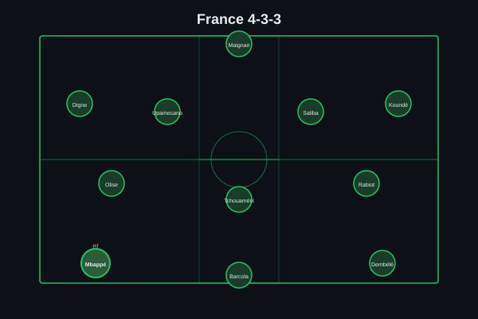
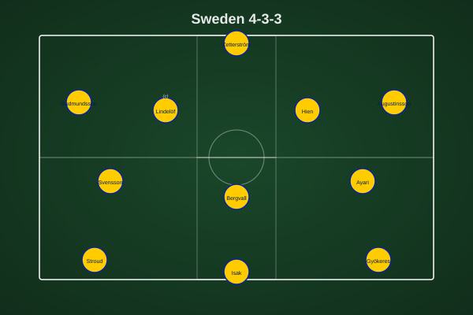
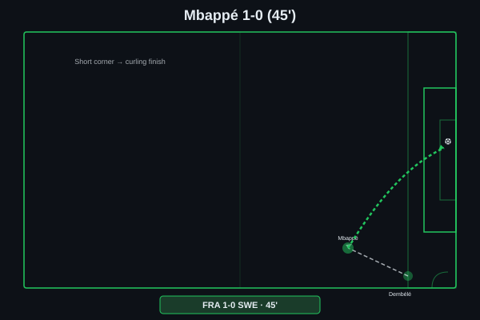
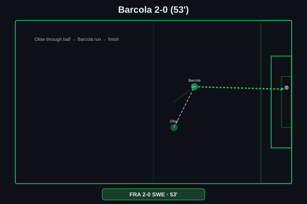
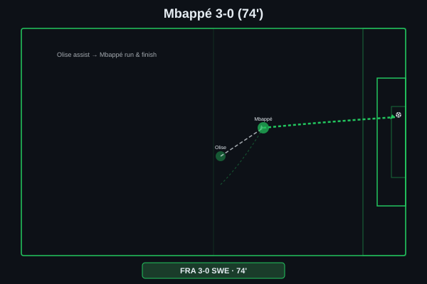
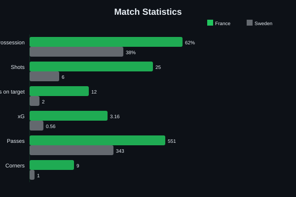
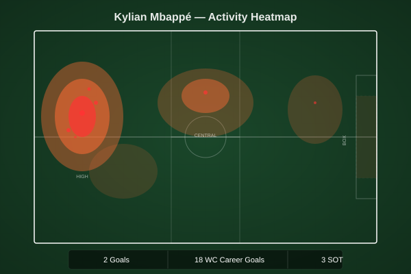

Mbappé curled in from Dembélé's short-corner assist just before half-time after having a goal disallowed earlier. Barcola doubled the lead from Olise's through ball early in the second half. Mbappé added his second from another Olise assist to seal France's place in the Round of 16.


France (4-3-3): Maignan; Koundé, Saliba, Upamecano, Digne; Rabiot, Tchouaméni, Olise; Dembélé, Barcola, Mbappé (c). Sweden (4-3-3): Zetterström; Gudmundsson, Lindelöf (c), Hien, Augustinsson; Svensson, Bergvall, Ayari; Stroud, Isak, Gyökeres.
France produced their most complete performance of the tournament, with Deschamps's decision to deploy Olise as a creative No. 8 rather than a wide player unlocking a fluidity that had been missing in earlier rounds. Olise drifted between the lines at will, pulling Lindelöf and Hien out of shape and creating pockets that Mbappé and Barcola exploited ruthlessly. Sweden's midfield trio of Svensson, Bergvall and Ayari were overrun from the start, unable to decide whether to press Olise or sit deep to contain Mbappé's runs — they chose neither effectively.
Sweden's gameplan was clearly to stay compact and hit on the counter through Isak and Gyökeres, and for the opening 25 minutes it worked reasonably well — France had plenty of the ball but few clear chances, and Mbappé's disallowed goal (marginal offside) felt like a let-off. But once the first goal went in just before half-time, Sweden had no choice but to push forward, and France's counter-pressing tore them apart. The gap in technical quality across the pitch was simply too wide.
The key tactical battleground was the space between Sweden's defense and midfield — Olise occupied it constantly, and neither the center-backs nor Bergvall took responsibility for tracking him. That single structural weakness was the root cause of all three French goals.

A brilliantly worked short-corner routine — Dembélé played it low into the feet of Mbappé, stationed just outside the box rather than inside it, and the captain's first touch created a slither of space before he curled a perfect left-footed finish into the far corner beyond Zetterström's despairing dive. The timing was devastating: seconds before half-time, after Sweden had defended resolutely for 44 minutes. The disallowed goal earlier in the half had only sharpened Mbappé's focus.

Olise's vision was the difference — picking the ball up in that pocket between the lines, he saw Barcola's diagonal run and threaded a perfectly weighted through ball that the winger collected in stride. Barcola's composure was icy: one touch to steady himself, then a low driven finish across Zetterström that nestled just inside the far post. Sweden's backline had pushed up too aggressively after the restart and paid the price for the space left in behind.

Olise again the provider — another line-breaking pass, this time releasing Mbappé on the left channel of the penalty area. The finish was trademark Mbappé: a controlled side-foot beyond Zetterström, low and precise, with the outside of his right boot. The goal took his World Cup tally to 18, moving him clear of Klose (16) into outright second on the all-time list behind only Miroslav Klose's ghost — or rather, behind the 16-goal record he himself has already surpassed, needing now only a run to the final to chase down Marta's overall mark.

62/38 possession split; 25-6 total shots, 12-2 on target; 3.16 xG vs 0.56 xG; 9-1 corner kicks — a procession from start to finish.

Mbappé's performance was the complete centre-forward display — not just the two goals, but the intelligent movement that created space for others, the relentless pressing from the front, and the calm authority of a captain leading his side through a knockout tie. His first goal was technical quality of the highest order; his second was pure predatory instinct. At 27, with 18 World Cup goals already, the conversation about his place in football history is no longer hypothetical — it's happening in real time.
Illustrative reconstruction based on known event locations, not raw GPS tracking data.
Got right: the exact scoreline, and the pre-match conviction that France's individual quality would prove decisive even against a stubborn Swedish setup. The prediction that Sweden would frustrate France for the opening phase before eventually being overwhelmed by the sheer weight of attacking talent played out precisely as written — Czech-style compactness could only hold for so long.
Got wrong: the disallowed Mbappé goal wasn't anticipated as a storyline at all, and the prediction didn't highlight Olise as the key creative force — his two assists elevated him to a level that the preview hadn't fully called. Sweden's inability to create any genuine chances (zero xG threat from open play for long stretches) was worse than even the pessimistic projection.
Mbappé - 9.0 ⭐ MOTM (brace, WC record chase)
Olise - 8.5 (two assists, creative hub)
Barcola - 7.5 (goal, constant threat)
Rabiot - 7.0 (controlled midfield)
Zetterström - 6.5 (nine saves, no chance on goals)
Hien - 6.0 (best of a struggling backline)
Lindelöf - 5.5 (caught out by Olise movement)
Bergvall - 5.0 (overrun in midfield)
France face Paraguay in the Round of 16. Sweden exit the tournament.
💬 Reactions & Comments